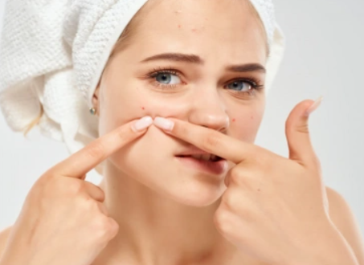
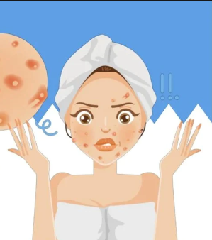

Acne is not a modern problem. Evidence of acne has been found in ancient Egyptian and Roman writings, showing that people have been dealing with it for centuries which means it is a common thing for people to have them.But don't be worry or scared of them since they are common and there are so many ways to prevent and take care of them.
Despite being discouraged by dermatologists, the act of squeezing or popping pimples remains incredibly popular. There's a whole genre of online videos dedicated to pimple popping. Popping up pimples can left scars on your skin. It can even lead to a bad skin condition in the future and it maybe hard for you to cure them.
While often associated with teenagers, acne can affect people of all ages. Adult-onset acne is a common occurrence. Most of them can start having small pimples on their face when they have turned 10 or 13. They would normally start freaking out but dear it isn't a thing to get scared or be worry about since you are starting to be a woman.
Acne can have a significant psychological impact on individuals, potentially leading to low self-esteem, depression, and anxiety. That's why proper management and supports are essential for those affected. It's important to manage your stress and your time schedule.
There are several myths surrounding for acne, such as the belief that eating chocolate or foods that contain heavy oil, sweetness and saltiness directly causes acne. While healthy diets can give a good skin results and can cause less pimples on the face.
There are numerous treatments available for acne based on their types and many more, ranging from topical creams and antibiotics to laser therapy and chemical peels and of course there are a lot more. The right treatment depends on the type and severity of acne. There are also a lot of available places for you to get the perfect treatments.